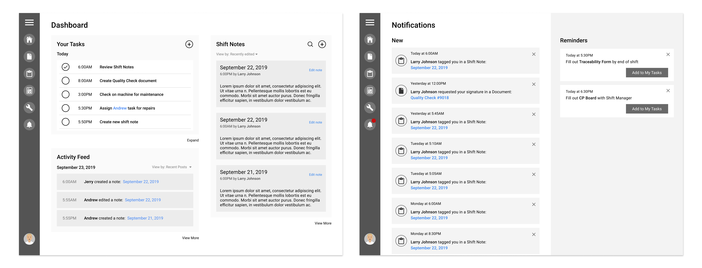

Factory Dashboard
This project was a POC that was completed within a one week timeframe. We had an initial Design Discovery workshop where we agreed on the direction and features to prioritize.
*Visuals in this page are altered due to project NDA.
Role:
User Research, User Interface, User Experience
Tools:
Figma, Invision
Design Sprint: Discovery Workshop
From the workshop, we focused on the flow that a Process Operator do on a daily basis. This includes getting to understand the way they communicate with other employees, as well as how data is collected and stored.

Challenges
Currrently the way the team is storing data is through writing it down on paper, and having it thrown away every couple months. This is a major pain point as data and reports gets lost as it is not stored digitally. As each team member is responsible for checking off certain tasks and writing the report or signing documentations, it is important that we capture this and create a solution where these data are being stored correctly.

Persona
The persona that we are focusing on is the Process Operator. We mapped out their needs and frustrations to get a greater sense of what their pain points are.
Needs
They want to see less redundancy in paperwork, see relevant information based on where they’re at on their tasks and what they’re doing and better data collection. They want to be able to utlizie the machines that they already have (iPad) and use it more effectively.
Frustrations
Currently there is a lot of repetitive work on forms, and a worry of losing papers/forms. Communication between employees are not seamless due to the lack of sorting through reports and documentations.
Proposal
We created a platform that focuses on personalization based on the employee's role. This includes a dashboard that displays their daily tasks, shift notes from other employees as well as an activity feed which shows an overview of all the activites that are being completed. We also took into consideration how documents can be viewed, how reports are signed and how to assign tasks to other people.
Dashboard
Process Operators are able to see an overview and checklist of their daily tasks, as well as a shift notes section for easy access to recently created notes for handoff.
Alerts
Recent notifications are the main focus on this page. Operators will be able to see a list of notifications on what they are tagged in or if there are tasks assigned to them. They are also able to see daily reminders and have the option to add to their daily task list.
Tasks
Operators are able to sort, view and add new tasks onto their board. Tasks are sorted by due date (today, this week or backlog) and they are able to view tasks assigned to them or tasks that they assigned to their team. When they want to add a new task, they are prompted to describe the task, select who to assign it to, who needs to be notified, a due date, and any notes or attachments.
Shift Notes
When the morning operators begin their day, they are able to review their daily shift notes here that was handed off by the previous employee. They are also able to create a new note on the same screen, where they can attach any notes or attachments and request signatures for sign offs. Operators are also able to assign tasks while creating new shift notes, and tag team members to notify them.
Next Steps
As the POC is completed and handed off to the clients, I would like to see the nexts steps for this to be usability testing to confirm if the current flow is efficient to our persona. As the lead designer on this project, it was a great learning experience to learn about how to effectively display information whilst catering for seamless data handoff.